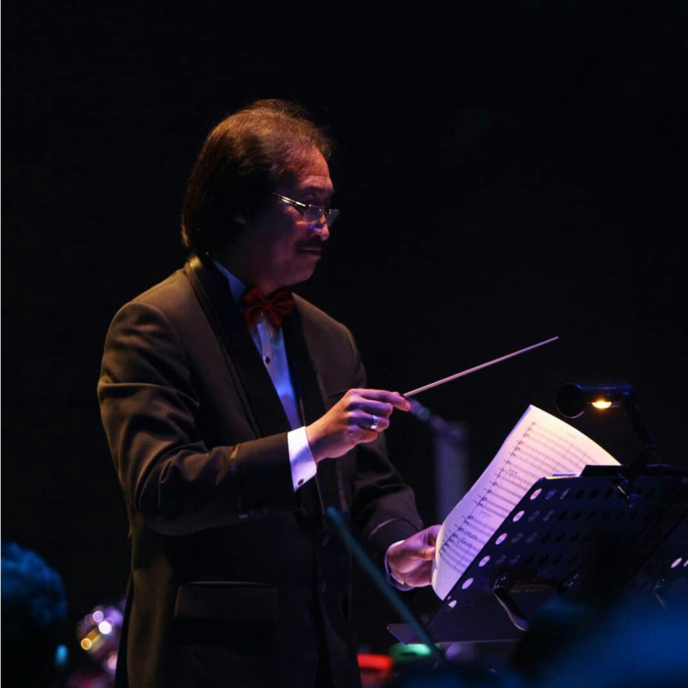

"Cerdas Bersama Musik"
Musik adalah ekspresi hati nurani yang memiliki dunia dasarnya sendiri. Layaknya sebuah dunia, dunia musik juga disertai dengan bahasa dan warna sebagai sarana ekspresi dan komunikasi.
Musik adalah warna semu, tidak hitam, tidak putih dan sebagainya. Warnanya tergantung pada kejujuran musisi itu sendiri, ketika mereka memainkan perannya sebagai individu dalam kesatuan.
Setelah lebih dari dua dekade Purwa Caraka Music Studio mendidik siswanya untuk tidak hanya menguasai ilmu musik, tetapi juga mengekspresikannya dalam kesatuan.

“WARNA MUSIK ADALAH SEMU, TIDAK HITAM, BUKANLAH PUTIH, DAN SEBAGAINYA”
Visi Kami Kami percaya bahwa musik adalah bagian penting dalam kehidupan,
sesuatu yang disukai oleh setiap individu dan layak diakses oleh semua orang.
Di Purwa Caraka Music Studio, kami meyakini bahwa nilai intrinsik musik jauh melampaui keterampilan sosial atau akademis seseorang.
Bermain musik bersama dalam kelompok tidak hanya memperkuat kemampuan sosial, tetapi juga mendorong semangat berbagi dan membangun relasi,
sementara rasa percaya diri siswa dipupuk melalui program pertunjukan yang dirancang dengan baik.
Pola belajar yang diterapkan pada kursus musik ini adalah:
1. Datang 1 (satu) kali seminggu ke tempat kursus dan bertemu dengan instruktur
untuk mendapatkan pengarahan serta petunjuk sesuai kurikulum yang telah ditetapkan.
2. Latihan di rumah secara rutin untuk mendapatkan skill atau keterampilan
sesuai dengan arahan yang telah diberikan oleh instruktur.
3. Demikian seterusnya sehingga instruktur dapat memonitor dan menentukan kemajuan siswa secara step by step, grade by grade.
“Kunci keberhasilan siswa adalah apabila rajin latihan di rumah secara terus-menerus dan datang kepada instruktur untuk diarahkan lebih lanjut.
Keterampilan itu hanya bisa dicapai dengan latihan yang tekun, disiplin dan tidak instan”.